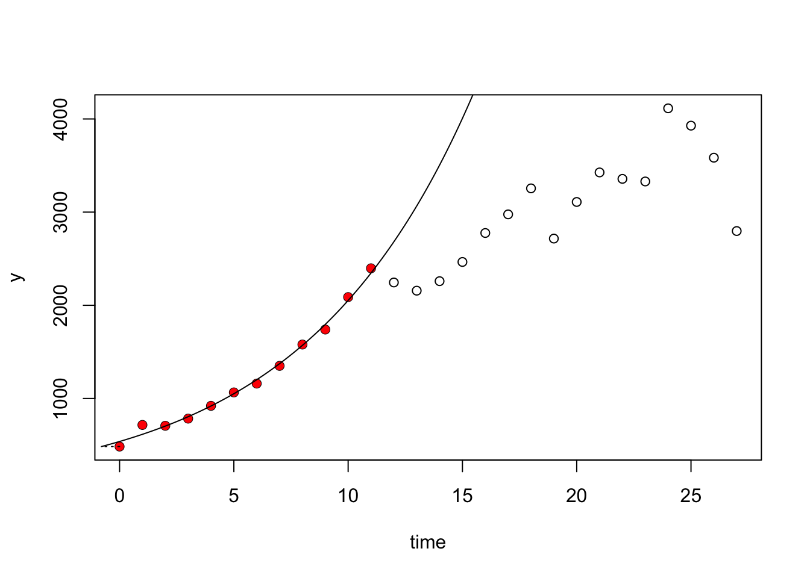
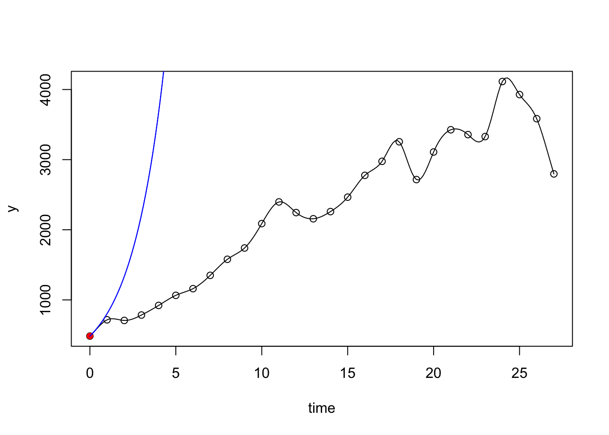
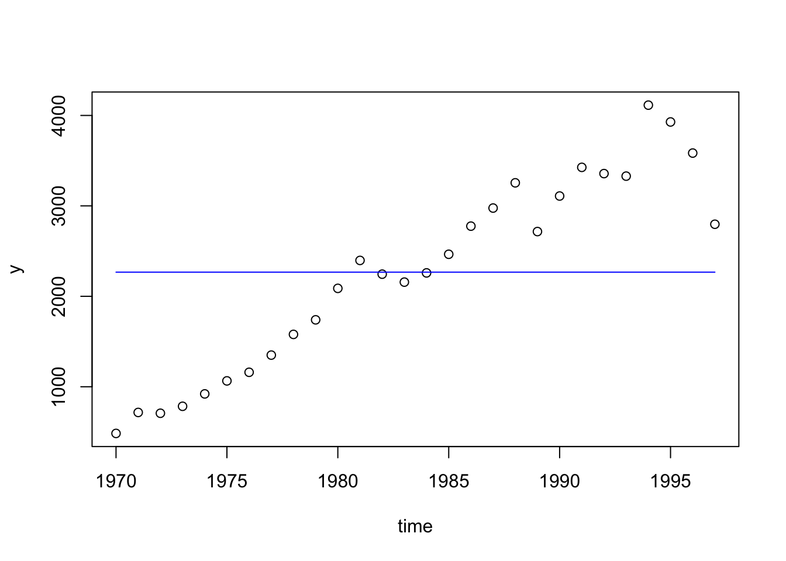

growth rates over time bacterial growth value is population size
you need to find r, K , and other parameters. Should always start at time = 0.
function: ‘fit_easylinear’ finds the max growth rate on the exponential segment of the curve
Easy linear ## the whole plot does not need to be exponential, can be only a segment of the exponential curve and will take the moment in time with the highest growth rate ## coefficients being output: ‘mumax’ is r. r is the growth rate
Fit splines (non-parametric model) ## fit_spline - splines fit models piecewise to a dataset ## we hate splines ## this uses splines to find r ## the spline is essentially centered on a single datapoint
Fitting parametric nonlinear models ## logistic grow th rate model p = needs a yknot (starting value), a mumax (r), and a K TIME = time y = population size
To calculate p, it doesn’t know where to start, so it needs some values to know where to start (kinda like nls)
Can apply this to multiple datasets ## spar argument is how smooth your splines will be for logistic growth: use the ‘all_growthmodels’ ## plot dose reponse curves
Limitation ## Does not provide any info about model-best fit, so how would you choose which model? ## how to know which r value to start with? Hard to know, but it seems like in this particular case, a wide range of r will be okay so long as there aren’t any local minmum or maximum.
Assignment:
Find r and K for the bison dataset using at least three different models (Exponential, logistic, spline) Try functions fit_easylinear, fit_growthmodels, and fit_Splines Do the different models agree on the parameter values?
── Conflicts ────────────────────────────────────────── tidyverse_conflicts() ──
✖ dplyr::filter() masks stats::filter()
✖ dplyr::lag() masks stats::lag()
ℹ Use the conflicted package (<http://conflicted.r-lib.org/>) to force all conflicts to become errors
library(ggplot2)library(here)
here() starts at /Users/oliviasomhegyi/Desktop/Grad School/2nd_Year/Winter_Quarter/ESM_211/esm_211_lab
library(janitor)
Attaching package: 'janitor'
The following objects are masked from 'package:stats':
chisq.test, fisher.test
read in the data
bison <-read_csv(here("data", "bison.csv")) %>%mutate(time = year - year[1]) # time has to start from 0
Rows: 28 Columns: 2
── Column specification ────────────────────────────────────────────────────────
Delimiter: ","
dbl (2): year, bison
ℹ Use `spec()` to retrieve the full column specification for this data.
ℹ Specify the column types or set `show_col_types = FALSE` to quiet this message.
# use function 'fit_easylinear' fit_bison_linear <-fit_easylinear(bison$time, bison$bison)# mumax is rcoef(fit_bison_linear)
y0 y0_lm mumax lag
484.0000000 538.3571209 0.1338074 -0.7954511
#mumax = .1338# plot resultsplot(fit_bison_linear) # the plot will note which points have highest growth rate using the data

## plot fits data from 1970-1982 best. - Overall, not the best fit for the data across all years.# can also plot the log of results and compare between the two
mumax = .1338
fit splines
# use the funtion 'fit_spline'fit_bison_spline <-fit_spline(bison$time, bison$bison)# mumax is rcoef(fit_bison_spline)
y0 mumax
483.9999995 0.5067486
# plot the fitted splineplot(fit_bison_spline)

## adds a spline connects each of the data points, first point at time 1970 is red; not a good fit.
mumax = 0.5067
fit growth models
# Best guess to initializep <-c(y0 =200, mumax =0.2, K =4000)fit_bison_growth <-fit_growthmodel(FUN = grow_logistic,p = p,bison$year,bison$bison)coef(fit_bison_growth)
y0 mumax K
200.000 0.200 2267.286
# K = 2267.286; Appears to be an underestimation of the model, since the data reaches up to 4000.# r = 0.2# visualizeplot(fit_bison_growth) # not the best fit

K = 2267.286; Appears to be an underestimation of the model, since the data reaches up to 4000. r = 0.2
Each model type gets quite different parameter values, becuase it is fitting the data differently. The results from fit_growthmodels (r = .2) and fit_easylinear (r = .1338) are relatively similar, but the results for fit_splines (r = 0.5067) is really quite different. To get a better idea of which function is best suited for the data, always perform an initial visual inspection to get an idea if growth is linear, exponential, etc. Want to have a good understanding of your data before selecting which model is the most appropraite.